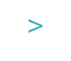
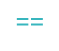

عمليات المقارنة Comparison Operators
في الدروس السابقة تعرفنا على أنواع البيانات وكان أخر نوع تكلمنا عنة هو الـ boolean وكيف أن هذا النوع يحتمل قيمتين فقط وهما true و false. في هذا الدرس سنتعلم كيف نستفيد من هذه القيمتين المنطقيتين لعمل المقارنات في اللغات البرمجية.
كما سبق وذكرنا أن الجافاسكربت لغة منطقية وتفكر كما يفكر عقلك لذا دعني أسئلك:
الـ 5 أكبر من الـ 0 ؟
نعم هذا صحيح
الـ 5 أكبر من الـ 5 ؟
لا هذا خاطئ
الـ 5 أكبر أو تساوي الـ 5 ؟
نعم هذا صحيح
هل لاحظت أن إجاباتك على الأسئلة أعلاة لا تحتمل سوى خيارين إما صحيح (true) او خاطئ (false) ؟
بهذه الطريقة نستطيع توجية أسئلة في اللغات البرمجية وعمل مقارنات على أساسها نجعل هذه اللغات تتخذ القرار المناسب.
مثال:
لنقم بتجربة كتابة هذا الكود في الـ console لنشاهد النتيجة
5 > 0 ;
النتيجة:

بالفعل الرقم 5 أكبر من الرقم 0 لهذا تم إرجاع القيمة true
لنجرب العملية التالية:
5 > 5 ;
النتيجة:

بالفعل الرقم 5 ليس أكبر من الرقم 5 لهذا تم إرجاع القيمة false
لنجرب العملية التالية:
5 >= 5 ;
النتيجة:

بالفعل الرقم 5 أكبر أو يساوي الرقم 5 لهذا تم إرجاع القيمة true
من الأمثلة أعلاة نستنتج بأننا نستطيع عمل مقارنة بإستخدام العمليات التالية:
أكبر من

أصغر من

أكبر من أو يساوي

أصغر من أو يساوي

هذه العمليات ستقوم دائماَ بإرجاع قيمة منطقية (boolean) إما true او false
المساواة equality
نستطيع كذلك التحقق من ما اذا كانت البيانات متساوية او غير متساوية ولكن تذكر في حالة مقارنة مساواة البيانات لدينا نوعين من المقارنات نقوم بإختيار أي منها بحسب حاجتنا وهي كالتالي:
الـ Strict equality
عند قيامنا بهذه المقارنة تقوم الجافاسكربت بمقارنة البيانات من حيث تطابق قيمتها وتطابق نوعها.
للقيام بعملية مقارنة المساواة نستخدم

للقيام بعملية مقارنة عدم المساواة نستخدم

مثال 1:
لنجرب كتابة العملية التالية في الـ console
5 === 5;

تم إرجاع قيمة true وذلك لأننا قمنا بعملية مقارنة بين الرقمين 5 و 5 حيث أنهما متطابقات بالقيمة و متطابقان بالنوع فالإثنان من النوع number
مثال 2:
لنجرب كتابة العملية التالية في الـ console
5 === "5";
النتيجة:

تم إرجاع القيمة false وذلك لأننا قمنا بعملية مقارنة بين الرقم 5 وبين النص “5” حيث أنهما محتلفان بالنوع فالأول من النوع number و الثاني من النوع string
الـ Abstract Equality
عند قيامنا بهذه المقارنة تقوم الجافاسكربت بمقارنة البيانات من حيث تطابق قيمتها بغض النظر عن نوعها حيث أنها تقوم أولاً بتحويل البيانات إلى نفس النوع ومن ثم تطبيق عملية المقارنة بإستخدام الـStrict equality
للقيام بعملية مقارنة المساواة نستخدم

للقيام بعملية مقارنة عدم المساواة نستخدم

مثال 1:
لنجرب كتابة العملية التالية في الـ console
5 == 5;
النتيجة:
تم إرجاع قيمة true وذلك لأن الرقم 5 والرقم 5 متطابقان بالقيمة و متطابقان بالنوع لذا لا حاجة لتحويلهما الى بيانات من نوع واحد قبل المقارنة
مثال :
لنجرب كتابة العملية التالية في الـ console
5 == "5";
النتيجة:

تم إرجاع قيمة true وذلك لان النص 5 والرقم 5 سيكونا متساويان في القيمة بعد أن يتم تحويل “5” التي هي من نوع string الى 5 من نوع number
التطبيق على الدرس السابق
هل تستطيع أن الأن أن تربط علاقة بين الـ 1 و الـ true و بين الـ 0 و الـ false ؟
نستطيع أن نستنتج بأن true تساوي 1 في القيمة وكذلك false تساوي 0 في القيمة, سنقوم بإثبات ذلك في الامثلة القادمة بالدرس التالي.
هل تذكروا هذه المعلومة من الدرس السابق حيث قلنا أن الـ true تساوي الـ 1 في القيمة وينطبق ذلك على false و 0 ايضاً؟
كيف نستطيع التأكد من ذلك ؟
لنقوم بإستخدام عملية المقارنة Strict Equality فإذا كانت القيمة المرجعة هي true فذلك يعني بأنها متساوية في القيمة والنوع:
true === 1;
النتيجة:

تم إرجاع القيمة false ما يعني بانها اما غير متساوية في القيمة او غير متساوية في النوع او كلاهما.
في الحقيقة نحن نعرف بأن البيانات التي نقوم بمقارنتها هي مختلفة بالنوع حيث أن true هي نوع boolean و 1 من نوع number لهذا كان من المتوقع ارجاع القيمة false عند مقارنتها بإستخدام Strict Equality
لنقوم بالإختبار الثاني بإستخدام عملية Abstract Equality:
true == 1
النتيجة:

لاحظ حصلنا على القيمة true ما يعني ان قيمة البيانات التي قمنا بمقارنتها متساوية بغض النظر عن نوعها. مما يؤكد لنا ما قمنا بذكرة سابقاً
بأن true تساوي 1 في القيمة
قم بتجربة التالي :
في الواقع undefined و null متساويات في القيمة ومحتلفات بالنوع وسنثبت ذلك في الدرس الخاص بعمليات المقارنة.
هل نستطيع مقارنة النصوص ؟
للإجابة عن هذا السؤال يجب عليك أن تعرف أن لكل حرف رقم يمثلة فعند قيامك بمقارنة النصوص في الحقيقة الجافاسكربت تقوم بتحويلها لأرقام وتقوم بمقارنتها
في الجدول التالي تجد أن بجوار كل حرف رقم يمثلة:

على سبيل المثال:
A => 11 a => 38
تلاحظ ان قيمة الحرف a اكبر من A لنقم بمقارنتها بالجافاسكربت ونشاهد النتيجة
"a" > "A";
قمت بسؤال الجافاسكربت: هل a اكبر من A ؟
النتيجة:

لاحظ تم إرجاع القيمة true ما يعني ان ذلك صحيح.
لنقم بمقارنة التالي:
"Mohammed" > "mohammed";
تمر الجافاسكربت على كل حرف وتقوم بمقارنته بكل حرف يقابلة و على اساس ذلك يتم تحديد أي من النصوص اكبر من الأخر او أصغر من الأخر حسب العملية المستخدمة كالتالي:

النتيجة:

لاحظ تم إرجاع القيمة false لتعني بأن النص Mohammed ليس أكبر من النص mohammed وذلك لان الحرف m أكبر من الحرف M حسب القيمة العددية المقابلة له في جدول ترتيب الأحرف.
إسناد القيم المنطقية للمتغيرات
تستطيع إسناد القيمة المنطقية الناتجة من عمليات المقارنة لأي متغير بالشكل التالي:
var x = "black" > "blue" ;
بما أن black ليست أكبر من blue سيتم إسناد القيمة المنطقية false للمتغير x
النتيجة:

إرجع للجدول لتعرف لماذا تم إعتبار blue اكبر من black وقم بإخباري بذلك في التعليقات